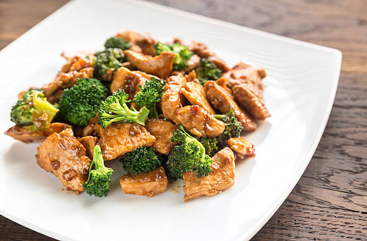

Chicken with Broccoli

Description
This is a super simple chicken with broccoli that utilizes subtle asian flavors to create a delectable
dish that will have you wanting more. Wow your friends with the flavors and wholesomeness of this dish!
Ingredients
- 1 lb boneless, skinless chicken thighs. Cut into bite-size pieces
- 1 tbsp soy sauce
- 3 tsp white granulated sugar
- 4 tbsp vegetable oil, divided
- 3 tsp salt
- 1 tsp cornstarch (optional)
- 8 cloves of garlic minced, divided in half
- 1 head of broccoli, cut into florets
- 2 tbsp water
Directions
- In a mixing bowl add in chicken, soy sauce, sugar, half of the oil, salt and half of the garlic. Mix well to coat the chicken. Let marinate for at least 30min, ideally overnight.
- Put second half of oil in a wok and put on medium heat. Once oil is heated up, add in chicken and stir fry. Cook until almost fully done about 5-7 min. Remove chicken from wok and set aside.
- Add broccoli into the wok and 2 tbsp of water. Cover wok with lid. Let cook for 2-3 min.Add in second half of garlic and mix around in broccoli to evenly distribute.
- Add chicken back into wok and stir fry with broccoli. Let cook 1 min.
- Serve chicken and broccoli over white rice.
Home
Recipe 1: Rigatoni
Recipe 2: Chicken Makhani